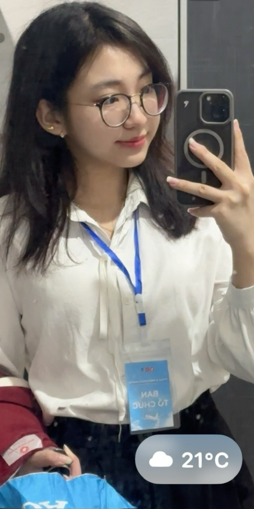
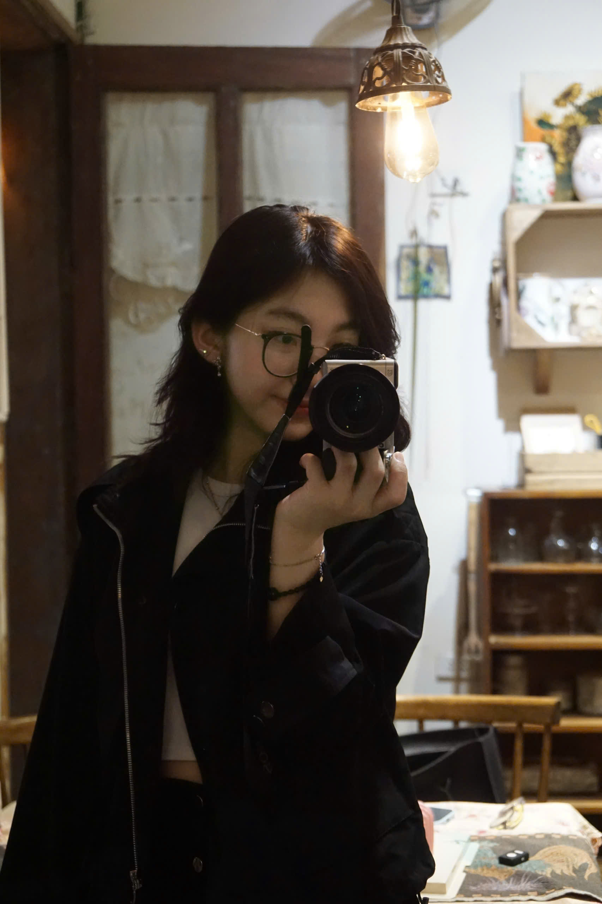
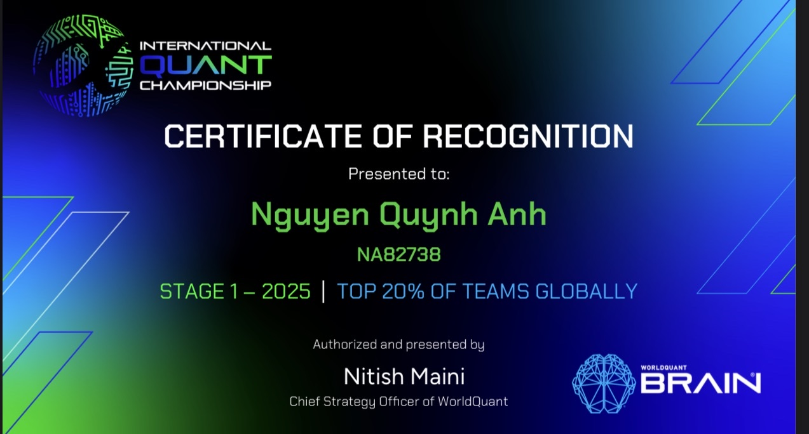
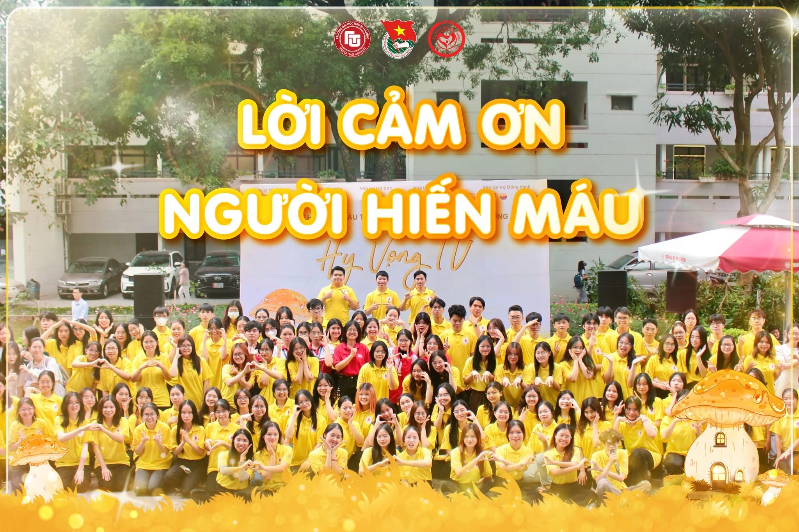
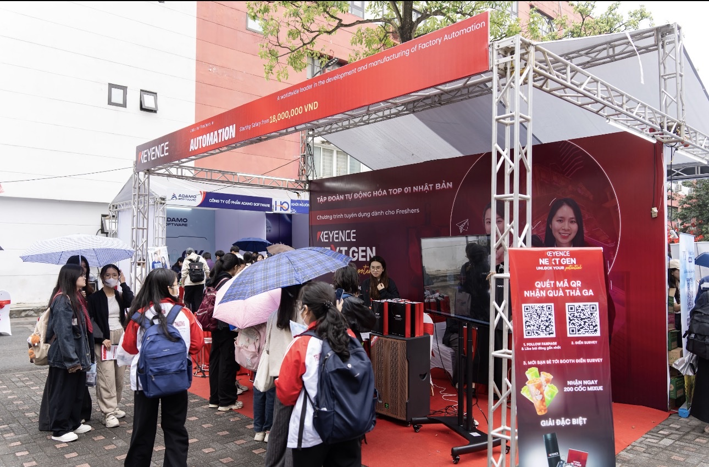

01 / RESEARCHCO-AUTHOR
PUBLISHED RESEARCH
Ứng dụng Machine Learning trong dự đoán hành vi mua sắm xanh của sinh viên tại Hà Nội
Đăng trên Tạp chí Kinh tế Châu Á - Thái Bình Dương
Student, Faculty of International Economics
Foreign Trade University
Mình yêu việc khám phá những câu hỏi mới — từ các con số trong kinh tế đến những câu chuyện và con người phía sau chúng.
EXPLORING ECONOMICS


GET TO KNOW ME
Mình là Nguyễn Quỳnh Anh, sinh viên Khoa Kinh tế Quốc tế tại Trường Đại học Ngoại thương.
Hành trình ở FTU cho mình cơ hội bước ra khỏi trang sách: tham gia các cuộc thi, cùng viết một bài báo nghiên cứu và góp sức trong những hoạt động sinh viên. Mỗi trải nghiệm là một cách để mình học hỏi, kết nối và nhìn thế giới rộng hơn.
LEARNING & EXPLORING
Mỗi cột mốc là một cơ hội để thử sức với điều mới và hiểu thêm về lĩnh vực mình theo đuổi.
PUBLISHED RESEARCH
Đăng trên Tạp chí Kinh tế Châu Á - Thái Bình Dương

Vòng 1 · International Quant Championship 2025
Cuộc thi Đấu trường Chứng khoán · THE AIVESTOR 2025
BEYOND THE CLASSROOM
Những hoạt động cùng tập thể giúp mình học cách lắng nghe, phối hợp và đóng góp nhiều hơn.

Cộng tác viên

Cộng tác viên
LET'S CONNECT
Cảm ơn bạn đã ghé thăm portfolio của mình. Nếu bạn muốn trao đổi về học tập, nghiên cứu hoặc các cơ hội hợp tác, hãy kết nối với mình nhé.